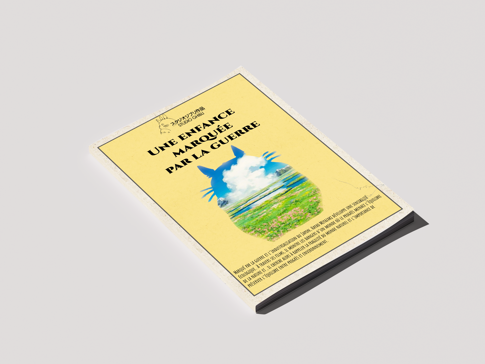
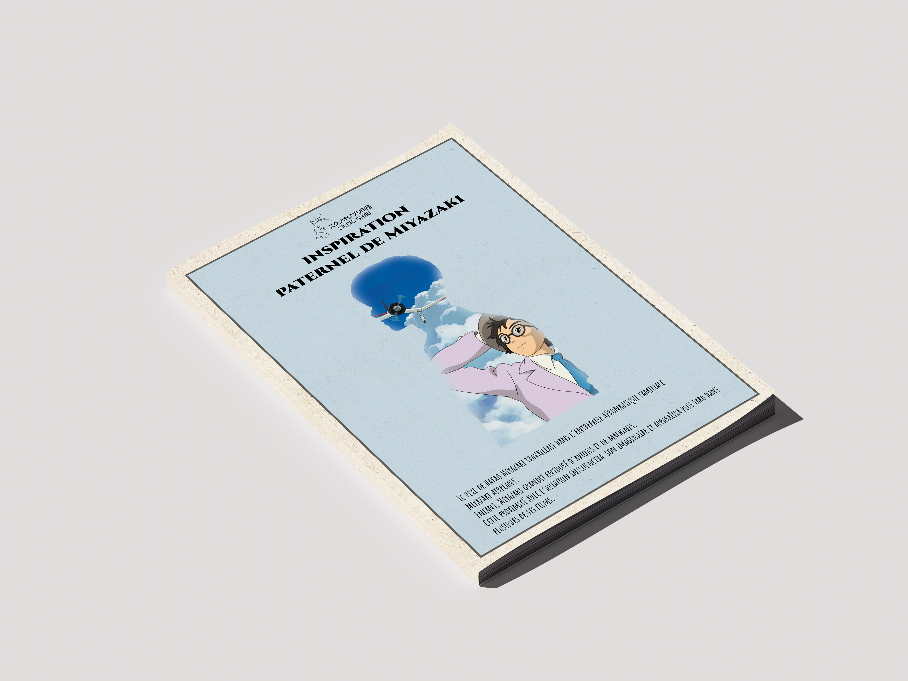
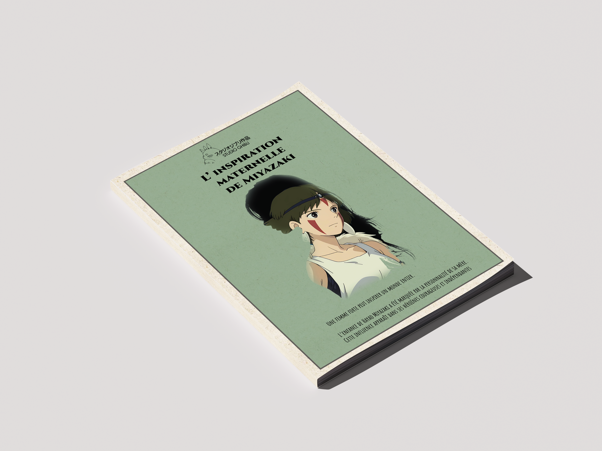

Narration
graphique
Ce projet consiste en une série d’affiches explorant la manière dont la composition graphique peut produire et faire évoluer du sens dans le temps. La recherche se concentre ici sur l’univers de Hayao Miyazaki, à travers une réflexion autour des différentes influences ayant contribué à la construction de ses récits. L’objectif est de traduire ces influences et leur relation avec son travail, en utilisant la composition, la mise en page et les différents éléments visuels comme outils de narration. Chaque affiche s’inscrit dans une recherche visant à créer une lecture progressive et cohérente de l’univers de Miyazaki.


